使用servlet向数据库中插入数据
回忆
- 上次研究了插入数据
- 而且是从网页的位置插入数据
- 让tomcat接收到/insert请求后
- 执行InsertServlet.class
- 从而插入数据

- 在这个过程中
- out输出到浏览器得到响应response
- System.out输出到服务器的日志
- 如果插入之后
- 其实最好展示的是插入结果
- 如何展示插入结果呢？🤔
搜索
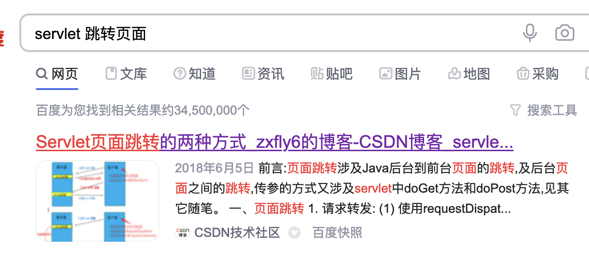
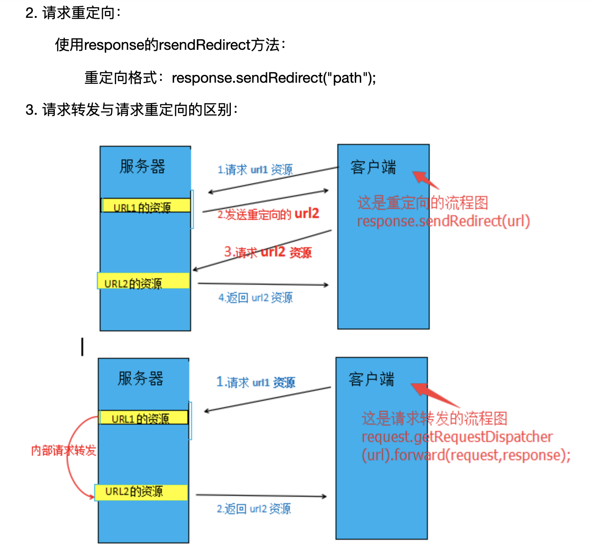
- 在服务器端
- 让response重定向到/select 然后直接把结果给过去好像就行了
- 试试去
重定向
- 我们首先确认一下/select能否出来
- 库里面有东西
- 但是查不出来
- 为什么？
查看日志
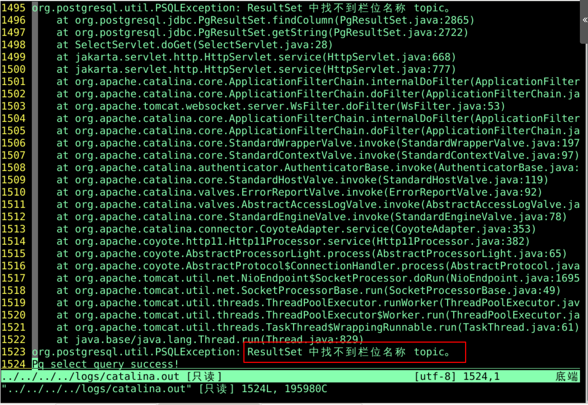
- 我们改过列名
- 把topic修改成了name
- 但是程序还没有来得及修改
- 可见数据库一改
- 程序都得跟着修改
修改
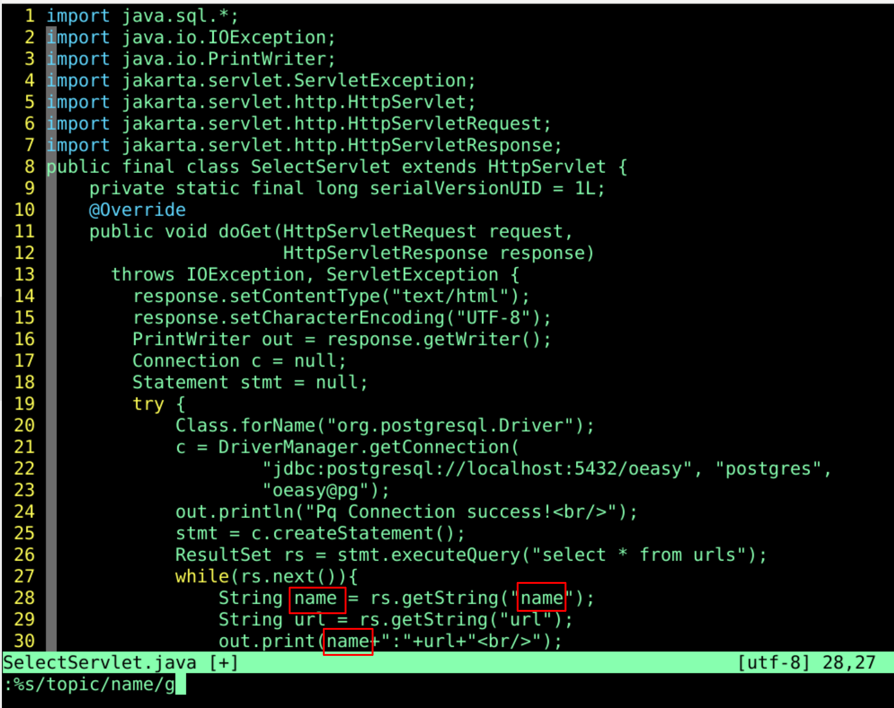
- 修改之后
- 保存并编译
- 通过浏览器访问
浏览器访问
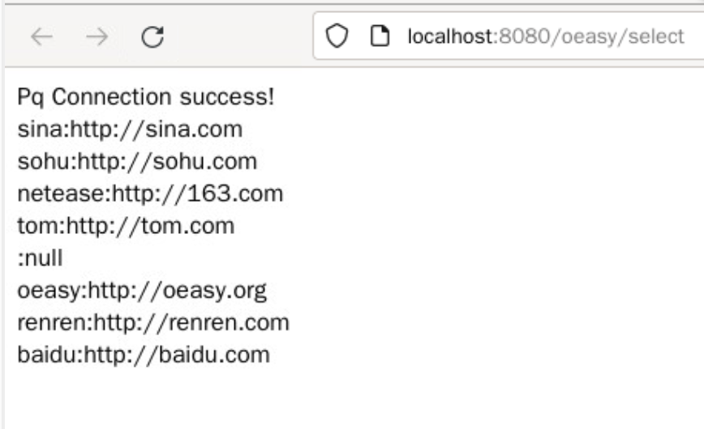
- /select这个url修复成功
- 如何跳转页面呢？
跳转
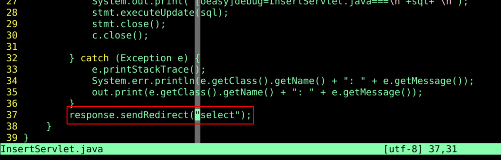
- 执行跳转的是InsertServlet.class
- 正常他应该返回/insert页面对应的响应response
- 在执行完插入数据的任务后
- 在最后一刻
- 他跳转了
- 跳转到了http://localhost/oeasy/select
- 然后执行SelectServlet.class的代码
- 然后把这个代码执行结果的response作为最终的response
- 发送给浏览器
- 浏览器什么结果呢？
浏览器结果
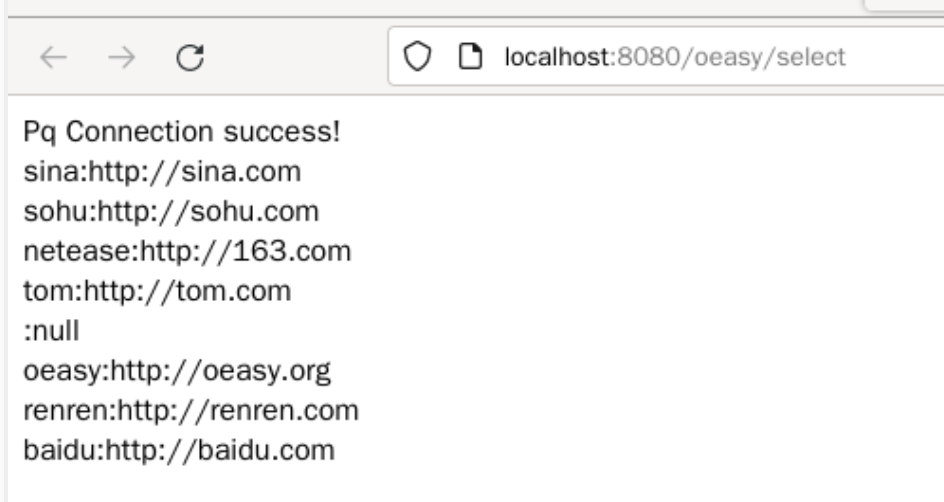
- 浏览器跳过去了
- 而且url也显示/select
- 如果SelectServlet.class自己最后跳转到自己会如何呢？
自我跳转
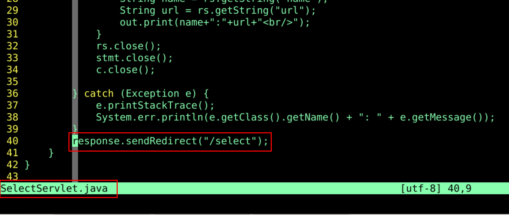
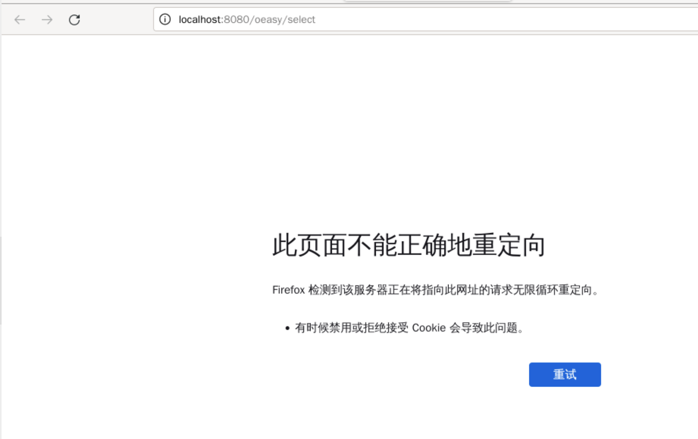
- 果不其然出错了
- 自我循环了等于是
- 关于这个函数的定义在哪呢？
查找api
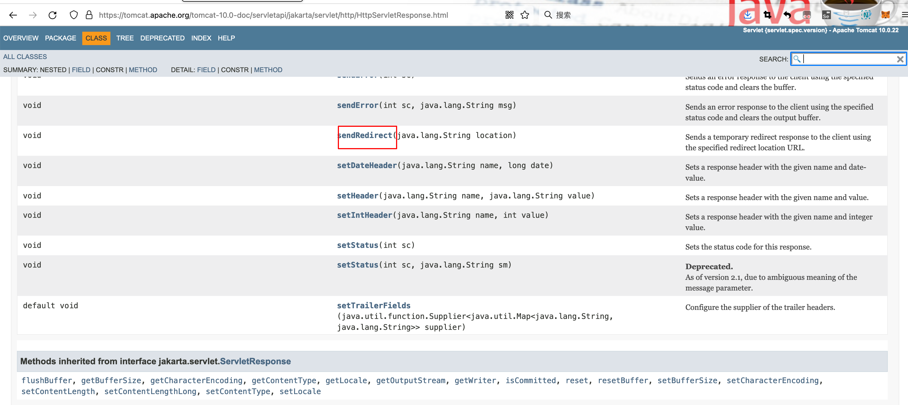
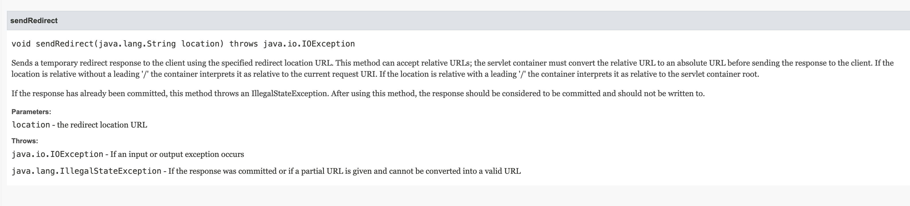
- 可以接受相对路径
- 但是会把相对路径转化为绝对路径
- 把最终完成代码写出来
最终代码
import java.sql.*;
import java.io.IOException;
import java.io.PrintWriter;
import jakarta.servlet.ServletException;
import jakarta.servlet.http.HttpServlet;
import jakarta.servlet.http.HttpServletRequest;
import jakarta.servlet.http.HttpServletResponse;
public final class InsertServlet extends HttpServlet {
private static final long serialVersionUID = 1L;
@Override
public void doGet(HttpServletRequest request,
HttpServletResponse response)
throws IOException, ServletException {
response.setContentType("text/html");
response.setCharacterEncoding("UTF-8");
PrintWriter out = response.getWriter();
Connection c = null;
Statement stmt = null;
try {
Class.forName("org.postgresql.Driver");
c = DriverManager.getConnection(
"jdbc:postgresql://localhost:5432/oeasy", "postgres",
"oeasy@pg");
out.println("Pq Connection success!<br/>");
stmt = c.createStatement();
String sql = "insert into urls(name,url) values('baidu','http://baidu.com')";
System.out.print("[oeasy]debug=InsertServlet.java===\n"+sql+"\n");
stmt.executeUpdate(sql);
stmt.close();
c.close();
} catch (Exception e) {
e.printStackTrace();
System.err.println(e.getClass().getName() + ": " + e.getMessage());
out.print(e.getClass().getName() + ": " + e.getMessage());
}
response.sendRedirect("select");
}
}
- 修改代码
- 插个数据试试
修改
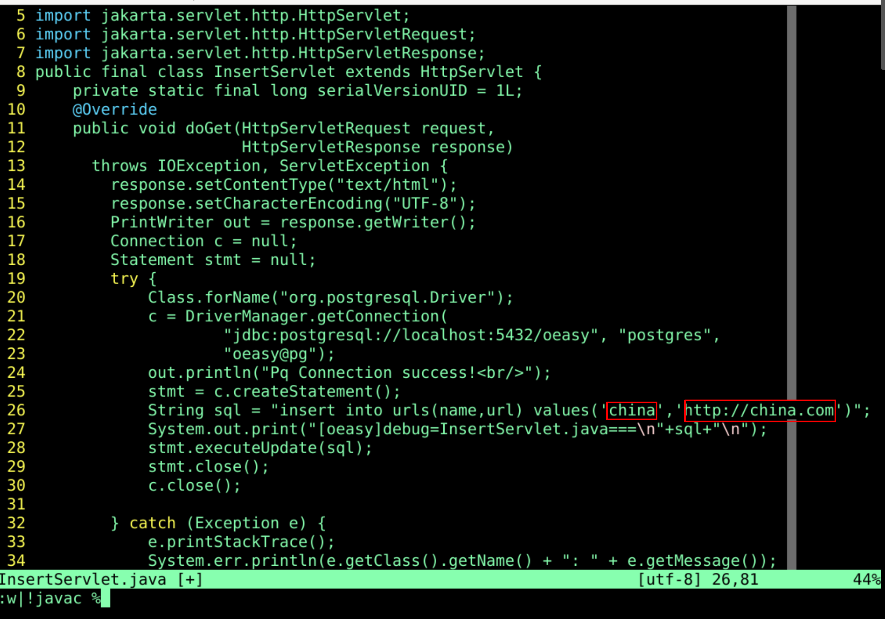
刷新网页
- 插没插成功数据不清楚
- 跳转完成了
- 但是SelectServlet.class还陷在自我跳转的循环中
跳出循环
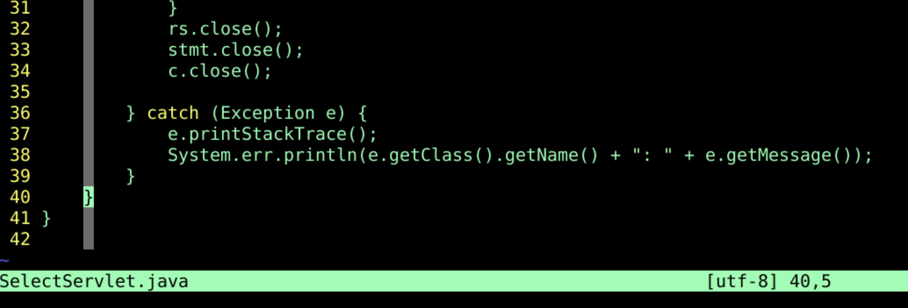
- 删除自我跳转
- 保存并编译
- tomcat后台自动加载
- 展示数据
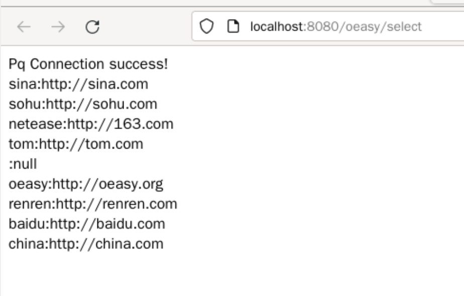
- 基本完成！
总结
- 我们这次研究了响应重定向
- 从网页的位置插入数据后
- 进行页面的跳转
- 不过如果我想要的是从网页里面文本框提交数据
- post到指定的处理InsertServlet.class
- 然后把数据插入数据库
- 这应该怎么办呢？🤔
- 下次再说！👋
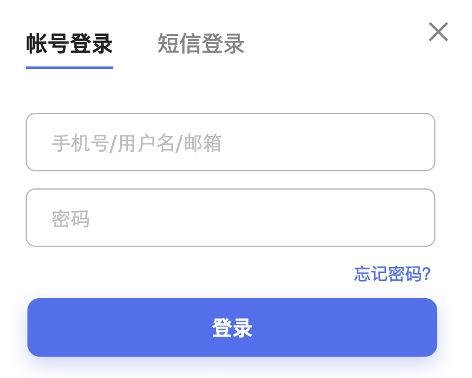